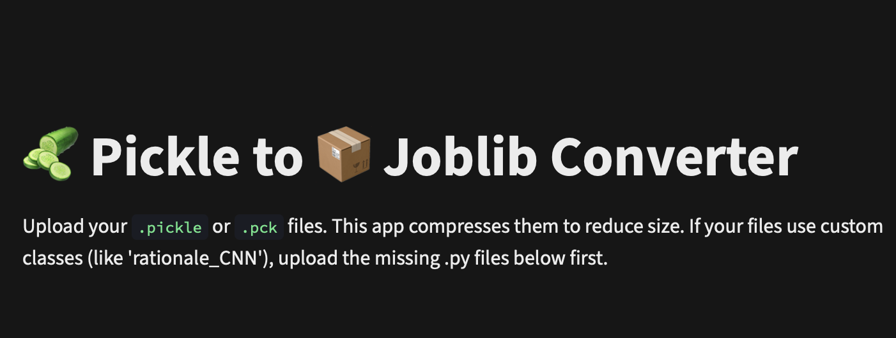
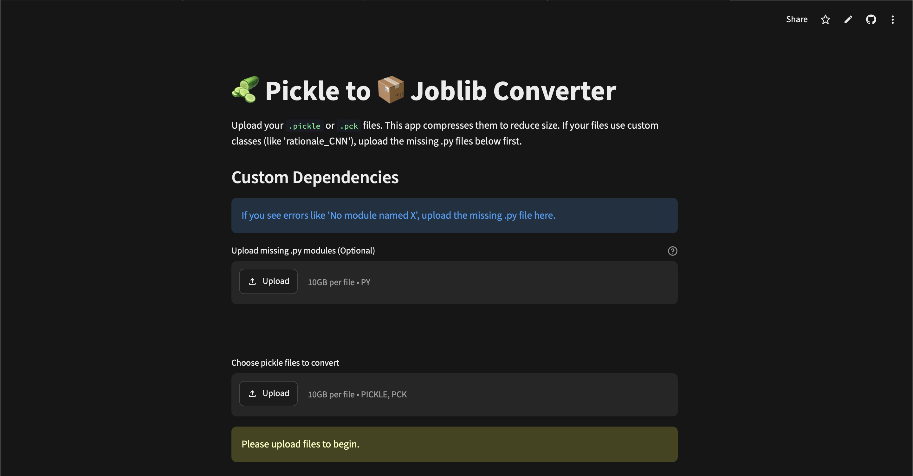

Smaller Files
Joblib's compression typically reduces file sizes by 30–80%, especially for NumPy-heavy objects. Less disk space, faster transfers.

Upload your .pickle or .pck files and get compressed .joblib files back — instantly.
Supports custom Python class dependencies. No signup, no install, completely free.
Drag and drop or browse to select your .pickle or .pck files. Upload multiple files at once for batch conversion.
If your pickle was created from a custom class, upload the .py module file in the dependencies section before converting.
The tool re-serializes your data with joblib compression level 3 and shows the size reduction. Download the .joblib file instantly.

Joblib's compression typically reduces file sizes by 30–80%, especially for NumPy-heavy objects. Less disk space, faster transfers.
Joblib uses memory-mapped loading for large NumPy arrays, meaning joblib.load() can be significantly faster than pickle.load().
Switching is trivial — just replace pickle.load() with joblib.load() and pickle.dump() with joblib.dump(). Same API, better results.
Got pickles made from custom classes like rationale_CNN? Upload the .py source and the tool handles the rest automatically.
After downloading your .joblib file, load it in Python:
import joblib
# Load your converted file
model = joblib.load("your_model.joblib")
# That's it, use it exactly like a pickle!
result = model.predict(data)Install joblib if you don't have it: pip install joblib
Joblib is a replacement for pickle that is significantly more efficient on objects containing large NumPy arrays. It also provides built-in compression, reducing file sizes by 30–80% compared to plain pickle serialization. The resulting .joblib files can be loaded with joblib.load() just like you'd use pickle.load().
Size reduction depends on your file contents. Files with large NumPy arrays typically see 30–80% reduction at compression level 3. Files with mostly small Python objects will see smaller but still meaningful reductions.
The tool accepts .pickle and .pck files as input. Output is always a compressed .joblib file that can be loaded with joblib.load('your_file.joblib').
If your pickle file was created from a class defined in a custom Python module, upload the corresponding .py file in the Custom Dependencies section before converting. The tool will load it so the object deserializes correctly.
Yes, the tool is completely free and open source under the AGPL-3.0 license. No signup or account is required. You can also self-host it from the GitHub repository.
All processing happens in-memory. Temporary files are created only during conversion and are immediately deleted afterward. No uploaded data is stored, logged, or shared with any third party.
Absolutely. The source code is available on GitHub. Clone the repo, install the dependencies, and run it with Streamlit. Since all processing is local, your data never leaves your machine.
The tool uses joblib's compression level 3 (out of 0–9), which provides a strong balance between compression ratio and speed. Higher levels would give slightly smaller files but take noticeably longer to process.